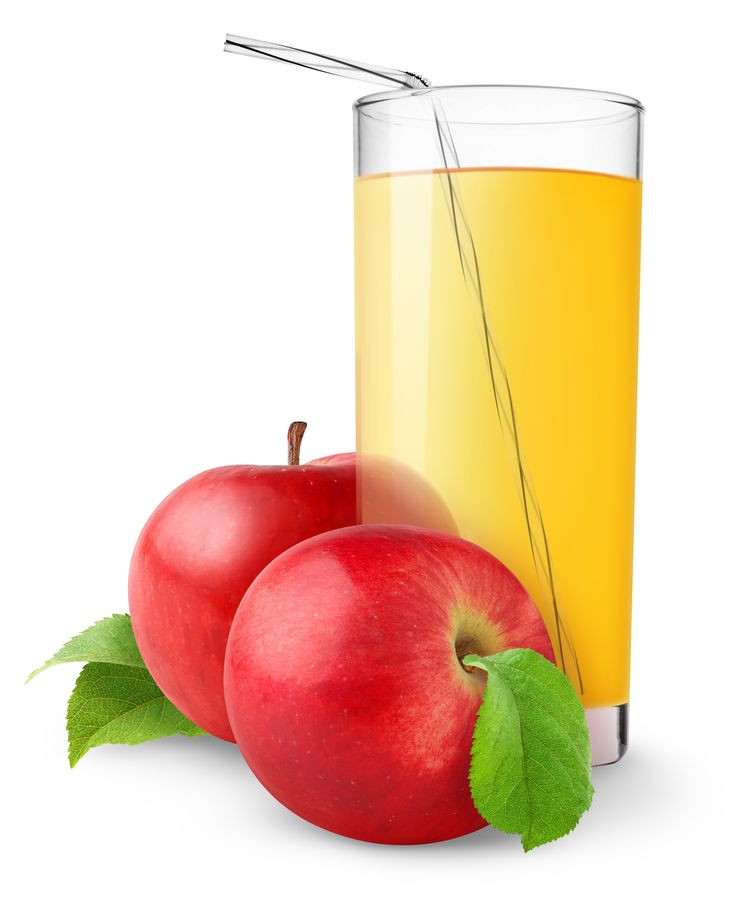

Jus Buah Kualitas Terbaik di Dunia.
Jus yang diperas segar dari buah-buahan terbaik untuk menghilangkan dahaga dan menyegarkan indra Anda.
10K+
Pelanggan Puas
5+
Varian Produk
3+
Tahun Pengalaman

Jus yang diperas segar dari buah-buahan terbaik untuk menghilangkan dahaga dan menyegarkan indra Anda.
Pelanggan Puas
Varian Produk
Tahun Pengalaman
Dapatkan diskon untuk paket jus detoks kami!

Diperas dari 100% jeruk Navel pilihan. Kaya Vitamin C.

Kesegaran apel Granny Smith yang sedikit asam dan menyegarkan.
Kami berkomitmen hanya menyajikan jus terbaik, tanpa tambahan gula buatan atau pengawet. Kesehatan Anda adalah prioritas kami.
Punya pertanyaan? Hubungi tim layanan pelanggan kami 24/7!